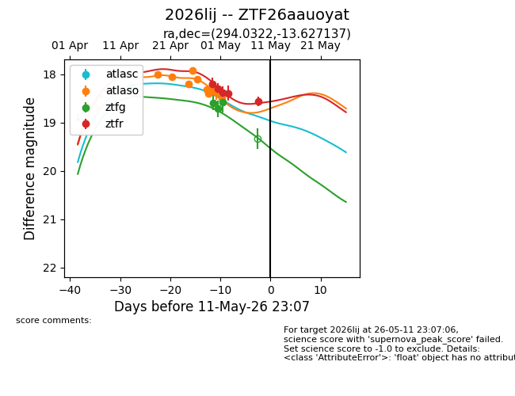
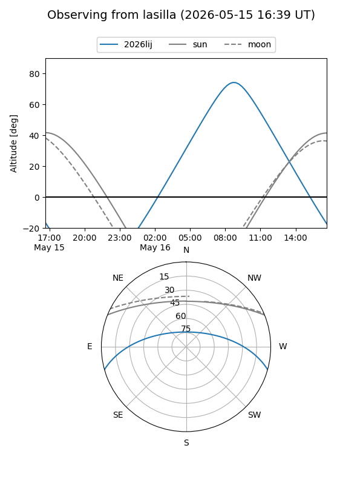
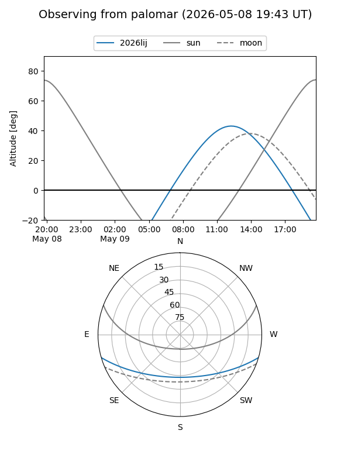
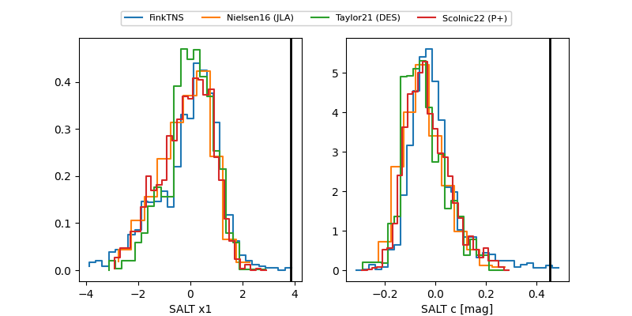

2026lij
Target 2026lij at 2026-05-11 23:08
Aliases and brokers:
FINK: link
Lasair: link
ALeRCE: link
TNS: link
YSE: link
alt names
ZTF26aauoyat (ztf,fink_ztf)
2026lij (tns,yse)
Coordinates:
equatorial (ra, dec) = 294.0322,-13.62714
equatorial (HMS+DMS) = 19:36:07.72,-13:37:37.69
galactic (l, b) = (25.5327,-15.96358)
Flags:
Photometry:
last atlasc=18.25, atlaso=18.49, ztfg=18.58, ztfr=18.56
1 atlasc, 12 atlaso, 3 ztfg, 5 ztfr detections
Lightcurve

Visibility


Additional plots
